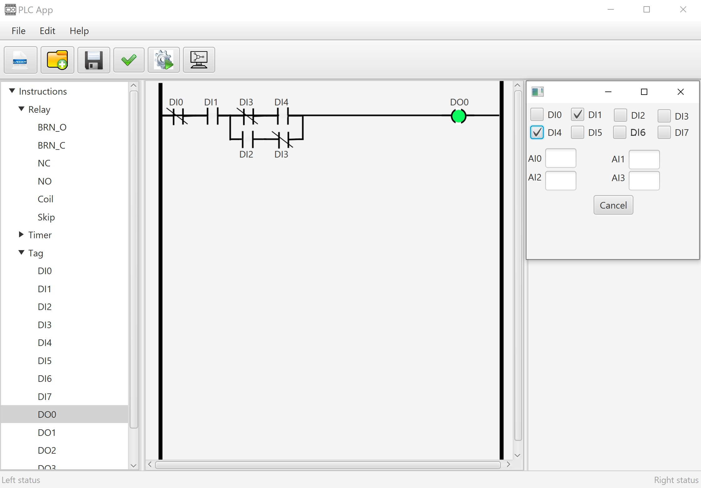
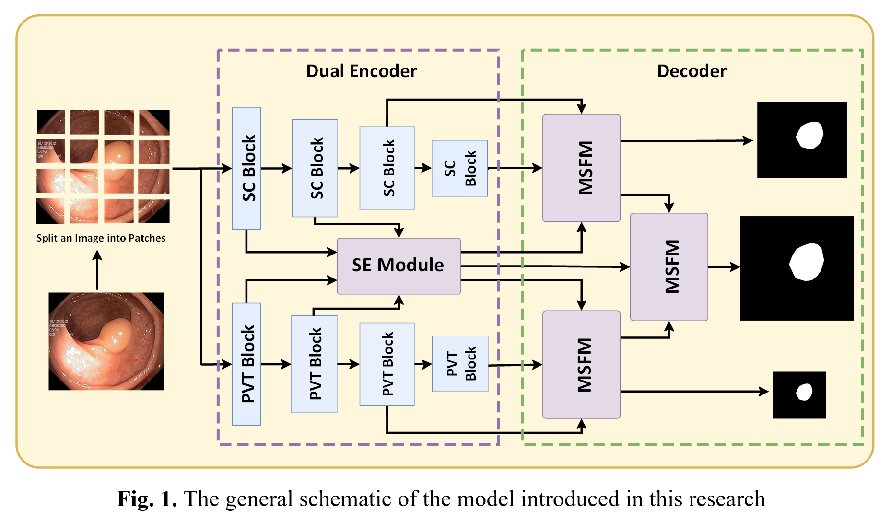
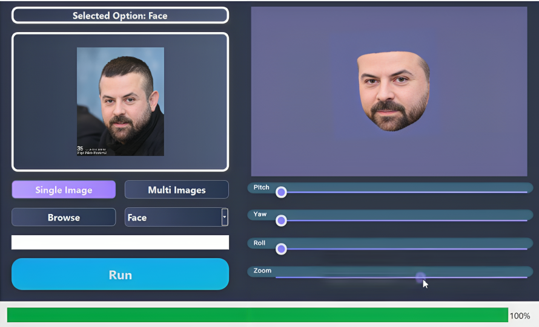

Design and implementation of a microcontroller-based programmable logic controller (PLC):
In my Bachelor's thesis, "Software and Hardware Design of Programmable Logic Controllers (PLC)," I explore the integration of software and hardware. With the aim of achieving an efficient PLC system, I employed both C and Java programming languages throughout the project. The hardware implementation involved writing a microcontroller-based PLC that was programmed in C. This hardware design encompasses essential features such as digital and analog ports, timers, and delays, which can be used in a variety of industrial applications. In parallel, I developed user-friendly graphical user interface (GUI) software in Java which served as a powerful tool for programming and compiling the PLC. In contributing a comprehensive solution combining C-programmed microcontroller hardware with Java-based GUI software, this work aims to enhance the functionality and applicability of programmable logic controllers in industrial settings.

Detection of colon polyps using colonoscopy images processing:
Colorectal cancer (CRC) is one of the most common causes of cancer-related deaths. While polyp detection is important for diagnosing CRC, high miss rates for polyps have been reported during colonoscopy. Most deep learning methods extract features from images using convolutional neural networks (CNNs). In recent years, vision transformer (ViT) models have been employed for image processing and have been successful in image segmentation. It is possible to improve image processing by using transformer models that can extract spatial location information, and CNNs that are capable of aggregating local information. Despite this, recent research shows limited effectiveness in increasing data diversity and generalization accuracy. This paper investigates the generalization proficiency of polyp image segmentation based on transformer architecture and proposes a novel approach using two different ViT architectures. This allows the model to learn representations from different perspectives, which can then be combined to create a richer feature representation. Additionally, a more universal and comprehensive dataset has been derived from the datasets presented in the related research, which can be used for improving generalizations. We first evaluated the generalization of our proposed model using three distinct training-testing scenarios. Our experimental results demonstrate that our ColonGen-V1 outperforms other state-of-the-art methods in all scenarios. As a next step, we used the comprehensive dataset for improving the performance of the model against in- and out-of-domain data. The results show that our ColonGen-V2 outperforms stateof-the-art studies by 5.1%, 1.3%, and 1.1% in ETIS-Larib, Kvasir-Seg, and CVC-ColonDB datasets, respectively.

3D Object reconstruction using images and videos processing:
This project focuses on the fusion of 3D Morphable Models (3DMMs), Neural Radiance Fields (NeRFs), and the Qt framework's efficiency. Primarily concentrating on head and face 3D reconstruction, the project uses 3DMMs to model facial variations and intricacies. To enhance user interaction and accessibility, I incorporated the Qt framework to craft an intuitive and user-friendly Graphical User Interface (GUI).

Fake audio detection using CNN-transformer structure:
Using the combination of CNN and transformer structure, I created a simulated audio detection system using raw audio signals and frequency features.
An automated deep learning-based network for breast cancer DCE-MRI classification and segmentation using segment anything model (SAM):
Breast cancer ranks as the second most prevalent form of cancer among the female population. Finding breast cancer at an early stage increases the chances of survival. Dynamic Contrast Enhanced-Magnetic Resonance Imaging (DCE-MRI) is one of the most important approaches and critical tools we have for detecting breast cancer in its early stages. Deep learning has helped specialists diagnose breast cancer by adding new ways to find breast cancer. Convolutional Neural Networks (CNNs) have been the most widely used deep learning model to classify breast cancer for a long time. However, they can only focus on small changes in picture patterns. Compared with CNNs, the Vision Transformer (ViT), which is based on the popular Transformer architecture used in natural language processing, is more accurate at classifying images because it can focus on long-range dependencies. In this study, an automated deep learning approach is introduced to diagnose benign and malignant breast cancer using DEC-MRI data. As a first step in this paper, we present a lightweight model that is a combination of ViT and CNN structures for binary classification. Next, a CNN-based decoder is used to segment breast lesions based on the trained weights of the encoder. This allows the trained system to accurately identify and segment breast lesions. Our last step is to introduce a new network in order to investigate the impact of segment anything models (SAM). As a result, our classification and segmentation models outperform state-of-the-art studies by 2% and 18.5% in the BreasDM dataset, respectively.